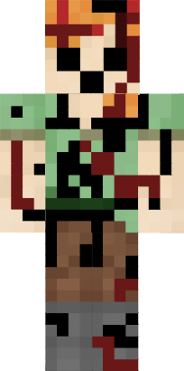

Creepypastas
Herobrine

Herobrine is Minecraft's most famous Creepypasta.He usually haunts singleplayer worlds.He is actually will not hurt you if you do not attack him,and he is actually a guardian warning you about another creepypasta named Entity 303.
Entity 303

Entity 303 is a fired Mojang (company which created Minecraft) employee. He is a hacker and he has the habit of hacking peoples worlds and destroying them. He teamed up with a group of people that hated Notch(creater of minecraft) and tried to destroy minecraft. Eventually, he was captured by Hypixel and imprisoned inside another dimension.
Giant alex

Giant Alex is a creature with a height of 12 blocks, which has the appearance of the default skin of Alex, with eerie hollow black eyes, gaping mouth, and blood covering the body. It only appears when the render distance is foggy, which can not be higher than 0.2 chunks. Giant Alex is known to stalk and watch the player around but doesn't seem to harm the player despite its size and appearance. However, because of the size of the creature, most people experience fear when it appears out of nowhere. It's unknown why giant Alex stalks and watches the player around the map or what happened to her in that seed, to begin with. Upon wondering the mainland Giant Alex can leave large footprints with a hole of a 4-by-3 pit with a depth of 2 blocks, indicating that it's wandering around. This all began with a mystical seed in version 1.12.2 in Minecraft where Giant Alex lived